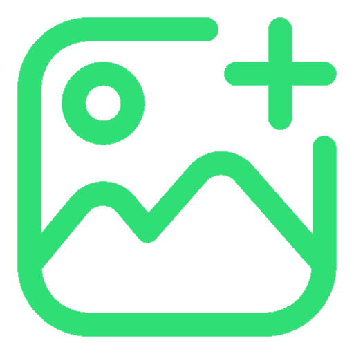
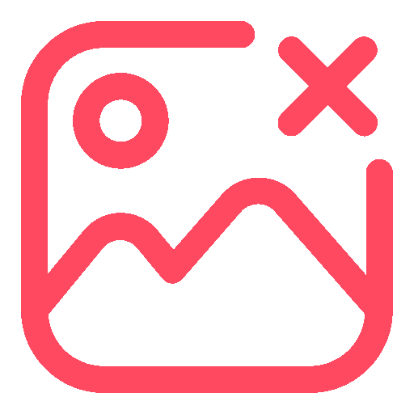

<ion-header [translucent]="true">
  <ion-toolbar>
    <ion-title class="ion-text-center">Detalles de {{ document.data.mote }} <br> </ion-title>
  </ion-toolbar>
</ion-header>

<ion-content [fullscreen]="true" class="ion-text-center">
  <ion-header collapse="condense">
    <ion-toolbar>
      <ion-title size="large">Detalles</ion-title>
    </ion-toolbar>
  </ion-header>

  <h3>Especie</h3>
  <ion-item>
    <ion-input [(ngModel)]="document.data.especie" name="especie" type="text"></ion-input>
  </ion-item>

  <h3>Mote</h3>
  <ion-item>
    <ion-input [(ngModel)]="document.data.mote" name="mote" type="text"></ion-input>
  </ion-item>

  <h3>Tipos</h3>
  <ion-item>
    <ion-input [(ngModel)]="document.data.tipos" name="tipos" type="text"></ion-input>
  </ion-item>

  <h3>Nivel</h3>
  <ion-item>
    <ion-input [(ngModel)]="document.data.nivel" name="nivel" type="number"></ion-input>
  </ion-item>

  <ion-icon name="arrow-back-outline" color="primary" class="icono__boton boton__volver"
    (click)="navegarAHome()"></ion-icon>

  <div class="botonera">

    <div class="botonesAccion">

      <ion-icon name="trash" color="danger" class="icono__boton boton__borrado" *ngIf="!isNuevo"
        (click)="clicBotonBorrar()"></ion-icon>

      <ion-icon name="checkmark-outline" color="success" class="icono__boton boton__modificar" *ngIf="!isNuevo"
        (click)="clicBotonModificar()"></ion-icon>

      <ion-button color="tertiary" *ngIf="isNuevo" (click)="clicBotonInsertar()">Añadir Pokémon</ion-button>
    </div>

    <div class="botonesImagen">
      
      
    </div>

  </div>

  

</ion-content>